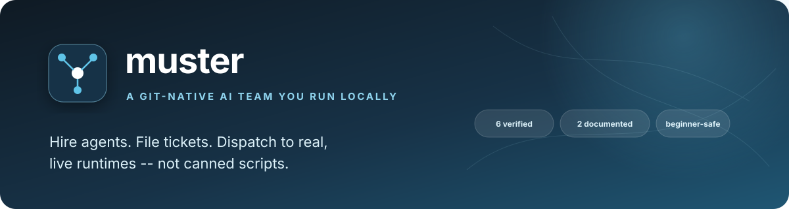

Portfolio project: a launcher and bookkeeper for AI coding agents
muster
A git-native AI team you run locally
Hire an agent (one markdown file), file a ticket, dispatch it to a real runtime. muster is a single front door to a shelf of AI coding and writing tools, with git worktree isolation and a durable record of every attempt. It is a launcher and bookkeeper, not an orchestrator or an agent: it calls no model, and it cannot judge whether a runtime's work was right.
See what is measuredView the repoWhat is not built
- 51 tests passing offline (counted locally)
- Latest CI run passed (checked)
- 6 runtimes verified live, 2 documented only
- Risk tiers are advisory
- Success check proves a change exists, not that it is right
- No production mileage

01
The problem
Most "AI agent platform" projects either claim to support a long list of tools without anyone having actually run half of them, or hide how thin that list really is behind a database and a UI.
muster labels every runtime verified or documented based on whether it was actually installed and dispatched against for real, and the whole thing is a handful of Python files and markdown, with no server and no database.
A tool can report success without a change
A live Aider dispatch printed "Applied edit to README.md" and exited 0, but
git login the worktree showed no new commit.succeededmeans the tool didn't error, not that the change happened.A verified adapter must work under real auth
Claude Code's
--baremode looked like the obvious default but fails outright where managed settings pin OAuth login, so the adapter omits it.Documentation can be second-hand
Gemini CLI's original adapter was built from a summary of the docs that missed real flags. Installing the real CLI and reading its
--helpcaught it.
02
How it works
You assign a ticket to an agent by hand. Dispatch prints what it would do unless you pass --run. A real run happens in its own git worktree where possible, and every dispatch is stored as a durable attempt.
- Hireone markdown file: which tool, what it is for, and a
tool_accessdial ofread_only,standardorfull - File a tickettitle, tags and a description
- Assignmanually; this tool does not guess who should do it
- Dispatchprints by default;
--rundoes it for real, in a fresh git worktree when thecwdis a git repo - Attempt recordPID, status and result;
filesystem_verifiedcross-checks git for standard and full dispatches - Close
close --summaryappends toledger.md
Stages, one at a time
Stage 1 Hire and file
An agent is a markdown file naming its tool and how much access it gets. Muster translates the access dial into each tool's own flags, but only passes them; the tool enforces them.
The dial does nothing for Ollama and LM Studio, and Codex standard and full have not been exercised live.
Stage 2 Assign and dispatch
Assignment is manual on purpose (see switchboard for the automatic-routing version of the idea). Dispatch prints what would happen by default; --run launches the runtime.
Medium and high risk agents print a WARNING on --run but are not blocked.
Stage 3 Worktree and attempt
If the agent's cwd is a git repo, dispatch runs in its own worktree, created fresh and left in place so you can review it. Every dispatch is a durable attempt, and a running one can be paused, resumed or killed with real OS signals against its recorded PID.
Stage 4 Check, then trust nothing
filesystem_verified catches a tool claiming success when no git change exists, for example the captured Aider run that reported success with no commit.
It only proves a git diff or commit exists in the worktree, not that the change is correct or what was asked for.
03
What is measured
No performance numbers. What is measured is how far each runtime was actually verified, which is the point of the project.
Eight runtimes are registered. Each is labeled verified or documented depending on whether it was installed and dispatched against for real.
| Runtime | Status | What was actually checked |
|---|---|---|
| Claude Code | Verified | Flags checked against claude --help; JSON shape from one real claude -p call; a full dispatch proven end to end |
| Codex | Verified | Flags checked against codex exec --help; a real invocation (-s read-only -o <file>, exit 0, correct output). Codex standard and full not exercised live |
| Ollama | Verified | Installed via Homebrew, pulled a real model, called the running server through this adapter |
| Aider | Verified, with a caveat | A live edit dispatch showed that "Applied edit" plus exit 0 does not guarantee a persisted change |
| OpenCode | Verified | Installed and run against the local Ollama server after fixing a parser that guessed the wrong field; its docs describe the JSON output only as raw events, so that parser is best-effort |
| Gemini CLI | Verified | A real GEMINI_API_KEY and a real dispatch through the full pipeline; --skip-trust is required unconditionally |
| Cursor | Documented, flags confirmed live | Flags checked against the real --help; a full dispatch needs a paid CURSOR_API_KEY, a deliberate cost-based stopping point |
| LM Studio | Documented only | Installed, but it is GUI-first and this environment had no window-server session, so its CLI never bootstrapped |
Caveat Verified means installed and dispatched against for real during development, not benchmarked or load tested. The README itself describes the project as built this week with 51 tests and no production mileage.
Source: README "What verified actually means here"
From the README header and repository.
| Item | Value |
|---|---|
| Registered example agents | 12 across 8 runtimes |
| Tests | 51, offline (real git worktrees, mocked runtime calls) |
| Python versions tested | 3.9 and 3.14 |
Caveat Counts of things that exist, not measures of quality. risk_tier is advisory and filesystem_verified only proves a change exists.
Source: README header and "Setup"; agents/, tests/
04
Architecture pattern
Pattern Manual dispatcher: a launcher with no routing. muster/dispatch.py takes a ticket and an agent you assigned by hand, builds the prompt, and launches that agent's runtime (muster/runtimes/), usually in a fresh git worktree (muster/worktree.py). It records the outcome as an attempt (muster/attempts.py) and can pause or kill the process (muster/control.py). Nothing chooses the agent; assignment is deliberately manual.
Muster itself is entirely deterministic and calls no model; the model-driven work happens inside the external tool it launches. dispatch only prints what it would do unless --run is given. It does no planning, decomposition or multi-agent coordination.
- Hire and file a ticket
agents/*.mdand a ticket file - Assignmanual
- Dispatchprints by default;
--runexecutes - Git worktreeisolated when the
cwdis a git repo anduse_worktreeis on; otherwise the sharedcwd - Runtime6 verified: Claude Code, Codex, Ollama, Aider, OpenCode, Gemini CLI; 2 documented: Cursor, LM Studio
- DispatchAttemptpid, status and result
ledger.mdclose --summary
05
Competencies demonstrated
Verification discipline
Every runtime is labeled verified or documented, disclosed in the agent registry,
muster doctorand the README.Isolation by default
Real
git worktreecommands, tested against a real repo; worktrees are left in place for review.Honest success reporting
filesystem_verifiedcross-checks git against a reported success, with its limits stated.Process control
pause,resumeandkilluse real SIGSTOP, SIGCONT, SIGTERM and SIGKILL against the recorded PID, with no daemon.Beginner onboarding
muster onboard,doctorand an interactiveagent-hire.
06
What is not built or not verified yet
Taken from the repository's own README and its known limits. This is part of the pitch: the gaps are known, written down and not rounded away.
- limit
Risk tiers only warn
risk_tierprints aWARNINGon--runfor medium and high risk agents and never blocks a dispatch. - limit
The success check proves a change exists
filesystem_verifiedonly proves a git diff or commit exists in the worktree, not that the change is correct. A follow-up Aider dispatch committed a file literally named after the requested text. - limit
The access dial is passed, not enforced
Muster only passes the flags and the tool enforces them. The dial does nothing for Ollama and LM Studio.
- not verified
Codex standard and full access
Not exercised live.
- not verified
Cursor and LM Studio dispatch
Cursor is documented with flags confirmed live but lacks an authenticated dispatch (paid key, deliberately not pursued). LM Studio needs a real interactive desktop session and was never verified.
- limit
Launcher, not orchestrator
It does no planning, decomposition or multi-agent coordination, and cannot judge whether a runtime's work was right.
- not built
Automatic routing
Assignment is manual on purpose; switchboard is the automatic-routing version of the idea.
- not built
Scheduling, Talk, Walkie-Talkie, Telegram
Real ideas, not built in this version. Livery has them.
- limit
No production mileage
Built this week, 51 tests, per the README's own comparison with Livery.
07
Roadmap
- DoneSix verified live runtimes; two documented with real install and CLI attempts
- DoneReal git worktree isolation, tested against a real repo
- DoneGeneralized memory (decisions, lessons, preferences) and beginner onboarding
- DoneFilesystem verification of dispatch success, and real pause, resume and kill
- Not doneAutomatic routing (see switchboard)
- Not doneScheduling, Talk mode, Walkie-Talkie debate, Telegram-style notifications
- Not doneGet LM Studio to verified; needs a machine with an interactive desktop session